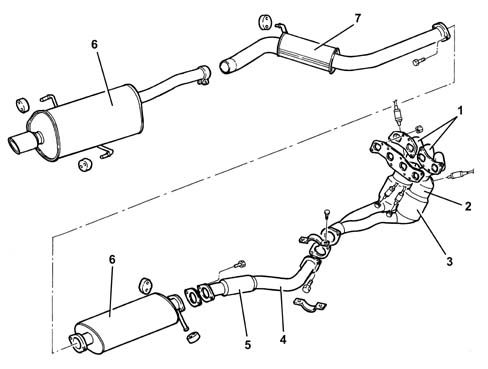
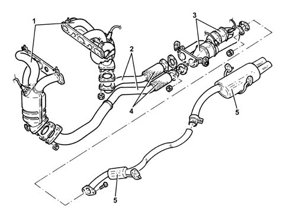
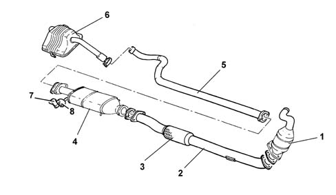

INTRODUCTION - EXHAUST PIPES AND SILENCERS
- Path
- Descriptions > 10 ENGINE UNIT > 1076 EXHAUST PIPES AND SILENCERS > INTRODUCTION - EXHAUST PIPES AND SILENCERS
- Kind
- system description
- Applies to
- engines: 2.0 JTS, 3.2 V6, 1.9 JTD 16V; all production periods
- Interactive page
- https://sloeber94.github.io/elrnDB-aGt/en/#/125000297
Applies to: engines: 2.0 JTS; all production periods
CONSTRUCTION SPECIFICATIONS
The engine exhaust pipes flow into two twin manifolds (1) integrated with the catalytic preconverters (2) and the catalytic converters (3) and from there into the front section of the exhaust pipe (4).
There is a flexible element (5) in the front section of the exhaust pipe to restrict the transmission of vibrations.
The rear section of the exhaust comprises two silencers (6) connected by an intermediate exhaust pipe (7).
Special guards prevent heat radiating toward the body.
The various components are supported by mounts and flexible rings secured to the underbody.

Applies to: engines: 3.2 V6; all production periods
CONSTRUCTION SPECIFICATIONS
The engine exhaust gases flow into two triple manifolds (1) with integral catalytic preconverters and then on to the three-way catalytic converters (3) through two exhaust pipes (2).
The exhaust pipe front sections contain two flexbile elements (4) to limit vibration transmission.
The rear exhaust pipe section consists of two silencers (5).
Special guards prevent heat radiating toward the body.
The various components are supported by mounts and flexible rings secured to the underbody.

Applies to: engines: 1.9 JTD 16V; all production periods
COMPOSITION
Structure
The engine exhaust gases flow through the manifold to the turbocharger and then via a pipe (1) to the oxidizing catalytic converter (2)
Characteristic of working principle 1080B EXHAUST EMISSION CONTROL SYSTEM
.
There is a flexible element (3) in the front section of the exhaust pipe to restrict the transmission of vibrations.
The rear section of the exhaust comprises an intermediate pipe (4) and the rear silencer (5).
Special guards prevent heat radiating toward the body.
The various components are supported by means of supports (6) and flexible seals (7) fastened to the underbody.
